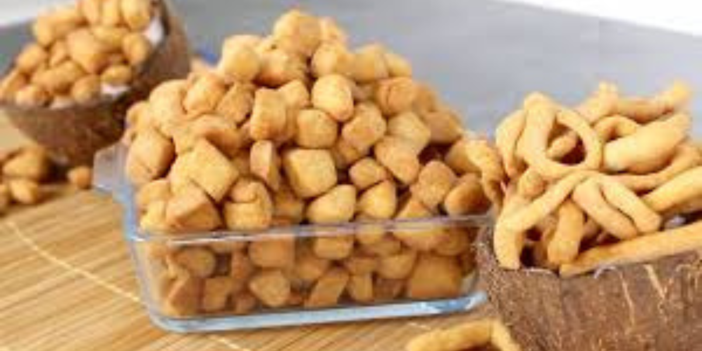

Milky and crunchy chin-chin

Description
Chin-chin is a popular, crunchy, and sweet Nigerian snack that's similar to cookie dough and is a staple of Nigerian culinary culture
Ingredients
- Flour
- Sugar
- Butter
- Liquid milk
- Salt
- Coconut cream
Making Procedure
- The dough is mixed into a soft, flexible dough.
- Roll out, and cut into small pieces or shapes.
- And then deep fried